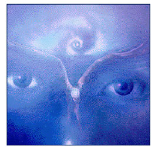

WilyWalnut.com
Meet the Genius in YOUR Brain!
GENIUS HOME - Reader's Letters: Image Streaming Mirror Mirror... The Mirror Mirror TechniqueDiscover a great new way of stimulating creative problem solving with image streaming...Joseph Phillips has been a keen correspondent for a number of months and has made remarkable progress with his own image-streaming experiments. Joseph used his newly unleashed genius to come up with an image-streaming technique all of his own, and has kindly agreed to share it with you here... It's over to you, Joseph!
MIRROR-MIRROR ON THE WALL By Joseph Phillips "Mirror, mirror on the wall, who's the fairest
one of all?" Was a question, one of many, asked by the queen in
the fairy tale "Snow White and The Seven Dwarfs." The magical,
omnipotent mirror was held by the queen and can be asked any
question the queen dare wishes. How to Image-StreamWhat you need is an external focus to describe your images to. A tape recorder with blank tape, or a simple Dictaphone like every office used to have, provides you a potential listener for that all-essential focus. Call in a friend, or phone to call up a friend and keep him or her on the line, and you have, even better, a live listener to serve as that external focus. Of that half of you who did get an image, some found a strong, clear, definite image or set of images, while others just got a glimpse, a faint impression which you might think was hardly worth describing, or weren't certain whether you were just making up the idea rather than seeing an image — — Yet whatever you got, the key is to examine and describe it aloud, in as rich detail as possible even if you feel at first as if you are "forcing" it and "making up" some of it to fill your description to your external focus listener. More, though, and more, will come as you describe — be alert to this happening, and describe the new impressions when they come. Your images will become rich and vivid and even their meanings — as Image-Stream contents are often symbolic or metaphoric — will start to become apparent. That is Image-Streaming. Each full-flow Image-Streaming session should run from 10 to 30 minutes. Examine whatever images happen to be playing in your mind's eye at the time, while describing them in rich detail to a live or potential listener (person or tape recorder). Even minimum, trivial-seeming impressions or whatever: describe them in such richly textured detail as to force anyone listening to experience and see what you are describing. 10 to 20 minutes at a time, practice several hours of Image-Streaming and you will have mastered the basic skills needed to make other forms of visual thinking work for you. — And you will also have experienced some of the other benefits of Image-Streaming as well, including improved intellectual performance and creativity. Even if your imagery is already clear and vivid, you will be astonished at how much more so it quickly becomes when you describe it in this way, while continuing to examine it. This improvement is even stronger if — You describe in as sensory-textured detail as possible. The major part of your brain that we want to bring on line, works with sensory images even in profoundly intellectual matters. Explanation takes you away from that sensory immediacy. Instead of saying, "I'm at the beach" or "This is Virginia Beach," detail instead the warmth of sand under your toes, the sound of surf, the smell of salt, the wheeling of the gulls above you in the almost-white sky, black and white of the gulls on that paler white far above you .... Describe as rapidly as you can, to get more and more detail in. Describe faster than you can stop to judge whether or not something is worth mentioning, just go ahead and flow it through (and see what comes with it). This is a kind of "brainstorm" only with description instead of ideas or answers, and has a similar rule to brainstorming's "if it occurs to you, express it!" Really rapid-flow describing exerts almost a Venturi force or suction pulling other perceptions into focus. All this is done most easily with eyes shut, so that your
inner visual circuits aren't distracted away from these
initially subtler signals, and so they can operate at full
sensitivity. In other words, please keep eyes closed during
such processing, in order to see more freely. MIRROR-MIRROR ON THE WALL1. Get into a comfortable and quiet place where you will not
be disturbed for at least 15 to 30 minutes. Make sure you have
a tape recorder or something or someone who will record your
descriptions. (Tape recorder works well because it can record
all your details.) (Make sure no mirror is present in
the room.) Now you know my technique, you are ready for any problem
that awaits. Remember the three rules of my technique. (Article by guest writer: Joseph Phillips)
Wily Walnut is the headbrain at http://www.WilyWalnut.com , your top resource for unleashing the genius within, becoming infinitely creative, intelligent and brilliant in all that you do! GENIUS ARTICLES HOME IQ TESTS - CREATIVITY - GENIUS - BRAIN STORMING - SELF-HELP - BRAINTEASERS - WILY WALNUT
| ||
|


"Unleash Your Inner Genius For Creativity & Innovation!" Copyright 2001-2015 WilyWalnut.com SITE MAP